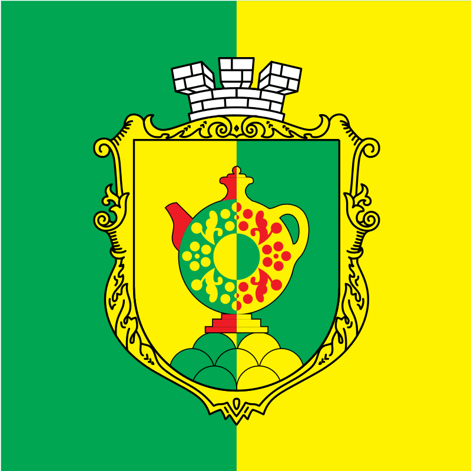
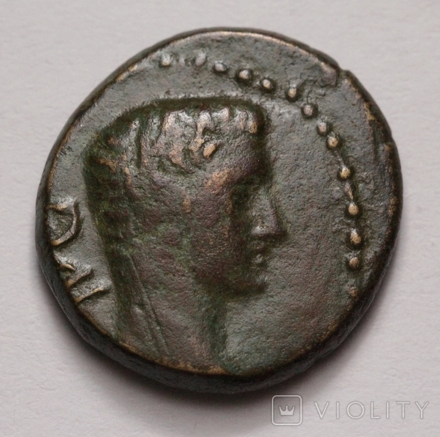
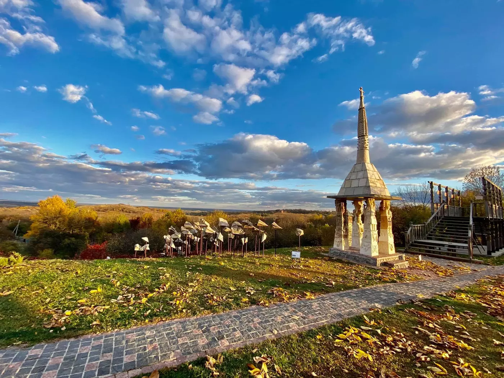

Моя Батьківщина- Опішня
Опі́шня-селище міського типу Полтавського району Полтавської області України. Старовинне козацьке містечко.Головний осередок сучасного українського гончарства.Опішня має ось такий прапор:

Історія Опішня — одне з найдавніших поселень на Полтавщині. Згідно з археологічними знахідками, виявленими на околицях селища, ця територія була заселена ще у добу неоліту. Саме у неолітичний час набуває широке використання керамічного посуду.
По берегах річки Ворскли, поблизу сіл Глинського, Хижняківки та Яблучного, були знайдені рештки глиняного посуду. На них добре видно сліди пальців давнього майстра, адже посуд з глини робили ще без гончарного круга. На городищі знайшли також срібну римську монету часів імператора Доміціана (1 століття н. е.).

Взагалі, про Опішню можна дуже багато чого розповісти, отг позбулося радянщини, стало зовсім інше гарне, сучасне, ну і як завжди повне туристами. Опішня має гарний ліцей, з якого я випускався.Завітавши до Опішні,Ви залишитесь приємно здивованими

На початок